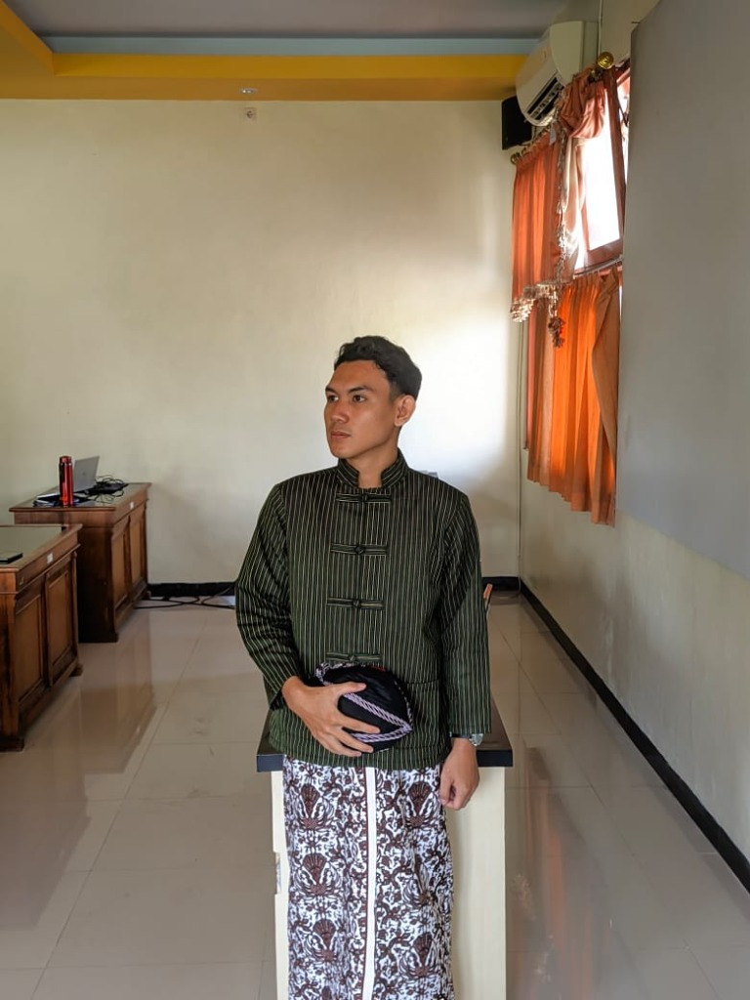

Refleksi Program PPG Calon Guru
Sintesis Pengalaman Belajar Transformatif, Refleksi Siklus Praktik Lapangan (PPL), serta 3 Komitmen Rencana Tindak Lanjut Karir Pendidik Profesional Masa Depan.

Ilham Kurnia Septiadi, S.Pd.
"Pendidikan di Indonesia harus diselenggarakan secara transformatif, berpusat pada peserta didik, serta adaptif terhadap era digital dan kecerdasan artifisial (AI). Melalui Program PPG di Universitas Negeri Yogyakarta, saya mengalami pergeseran paradigma mendasar: dari sekadar pengajar materi hafalan menjadi fasilitator yang membangun daya nalar kritis, berpikir komputasional, serta budi pekerti luhur bagi generasi muda."
Paradigma Belajar
Pendidikan Transformatif
Pendidik Abad 21
TPACK, PBL & Refleksi
Aksi Masa Depan
3 Pilar Rencana Karir
Bukti Autentik
Lembar Kerja 3 Resmi
Bagaimana Seharusnya Pendidikan di Indonesia?
Pendidikan nasional memerlukan rekonstruksi pola pikir dari pendekatan tradisional menuju ekosistem belajar yang humanis dan adaptif. Ruang kelas masa kini dituntut mengintegrasikan teknologi digital secara bijak, melatih kecakapan pemecahan masalah kompleks, serta menghubungkan teori akademik dengan realitas vokasi industri.
- Orientasi Berpusat pada Murid: Menghargai kodrat unik setiap anak melalui pembelajaran diferensiasi (TaRL) yang bermakna.
- Kecakapan Abad ke-21: Penanaman nalar kritis (HOTS), berpikir komputasional, kreativitas solusi, dan etika literasi digital.
- Integrasi Kerangka TPACK: Sinergi harmonis antara konten keilmuan informatika, pedagogi aktif, dan instrumen teknologi modern.
Langkah Nyata Menjadi Guru Profesional Era Modern
Menjadi pendidik profesional bukan sekadar memiliki sertifikat, melainkan mewujudkan komitmen moral dan intelektual secara konsisten dalam tiga pilar operasional:
- Pengembangan Kompetensi Berkelanjutan: Menguasai teknologi pembelajaran digital, merancang media interaktif, dan menerapkan model inovatif seperti gamifikasi serta Pembelajaran Berbasis Proyek (PBL).
- Pembiasaan Siklus Refleksi Diri: Menguji efektivitas metode mengajar secara berkala melalui rekam jejak praktik nyata di SMAN 9 Yogyakarta dan SMKN 5 Yogyakarta bersama guru pamong.
- Ekosistem Inklusif & Pembaruan Wawasan: Menciptakan iklim kelas yang ramah dan memotivasi, sembari terus memperbarui kompetensi di bidang Informatika, Koding, dan Kecerdasan Artifisial.
Ketika memulai karir sebagai guru penuh waktu, saya bertekad mengonkretkan seluruh hasil refleksi PPG ke dalam tiga pilar rencana tindak lanjut strategis yang terukur dan berdampak nyata bagi ekosistem sekolah:
Pembelajaran Kontekstual Berbasis Digital
Mengoptimalkan penggunaan media pembelajaran interaktif berbasis web, sistem manajemen kelas digital (LMS), serta pendekatan Koding dan Kecerdasan Artifisial (AI) yang telah dikembangkan selama PPG.
Tujuannya adalah membantu peserta didik memahami konsep abstrak ilmu komputer secara konkret, terapan, dan menyenangkan sesuai minat kejuruan masing-masing.
Asesmen Personal & Berkelanjutan
Memanfaatkan teknologi asesmen formatif digital dan pelacakan kehadiran/partisipasi secara waktu nyata (real-time analytics) guna memetakan kesiapan, progres, serta gaya belajar setiap individu murid secara akurat.
Data asesmen digunakan secara langsung sebagai dasar intervensi diferensiasi dan bimbingan belajar personal yang tepat sasaran (*teaching at the right level*).
Budaya Kolaborasi & Refleksi Berkelanjutan
Membangun jejaring kolaborasi aktif dengan rekan sejawat, kepala sekolah, komite, dan orang tua murid melalui forum komunitas belajar praktisi (lesson study).
Menjadikan evaluasi diri atas modul ajar sebagai kebiasaan rutin untuk terus menyempurnakan kualitas pengajaran dari waktu ke waktu secara berkesinambungan.